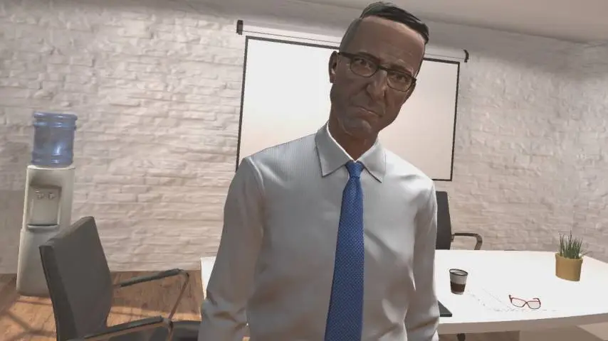
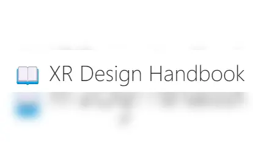
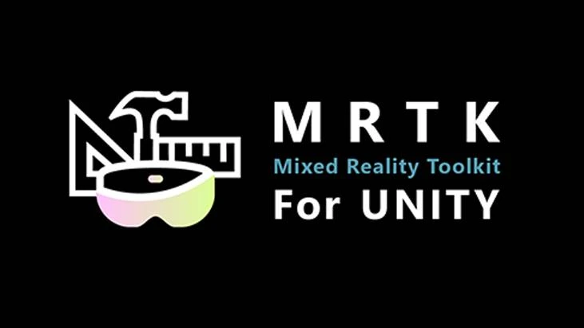
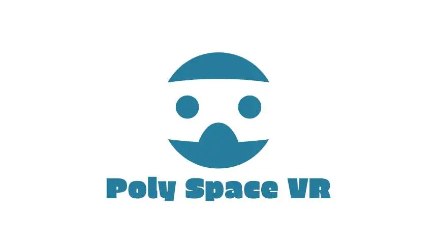
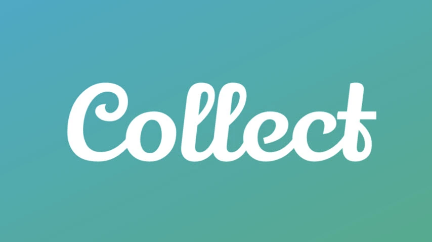
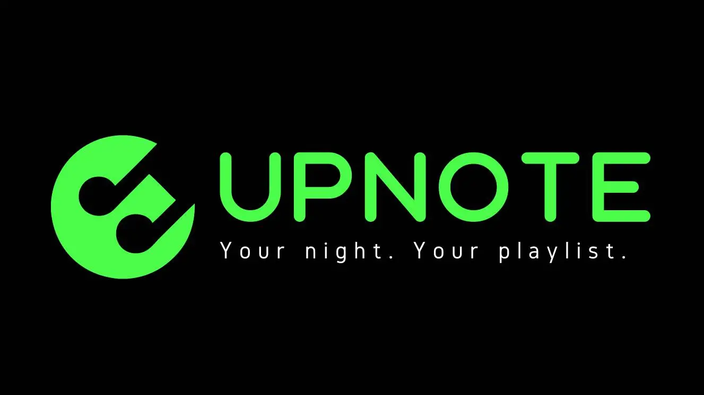

Hi there !
I'm Jack Yang a XR developer an Entrepreneur
Award-winning XR developer with a decade of experience in
building immersive experiences.
about me
-
Hello! I'm Jack, an AR/VR developer specializing in XR interactions and virtual social experiences. Currently I'm shaping the future at Microsoft Mixed Reality.
Since working in the XR industry in 2015, I've passionately focused on using immersive tech to make the world a better place.
Feel free to reach out if you want to collaborate or just want to chat!
experience
Working on Microsoft Mesh - the next generation communication and collaboration platform
I developed an AR/VR training system with advanced features like gesture recognition and hand tracking. I Introduced multiplayer networking, 3D modeling processing, and other features. I helped Holos to secure a $750K U.S. Air Force contract and get into the TechStars Program.
I formulated algorithms for simulating color blindness on hyperspectral images, designed VR simulations with a color-calibrated Oculus Rift, and developed an AI mimicking human color vision behavior, achieving 90% chromatic adjustment accuracy.
I developed a low-latency VR system for remote robot control via gestures and created a UI for replicating robot arm movements, analyzing data from 15+ lab experiments in Unity.
Education
I studied Computer Science and Communication Arts. I also researched under Professor Mikhail Kats and Professor Michael Gleicher . For two semesters, I was the Teaching Assistant for CS 559 (Computer Graphics).
I studied game design at CMU Entertainment Technology Center, where I also led and published a VR game development with Oculus Rift DK2 called Kitchen Kraving under the instruction of Professor Chris Klug
• UC San Diego -
VR Development Professional Certificate
• University of London - Virtual Reality Specialisation
• Georgia Tech - Human-Computer Interaction Professional Certificate
• UC San Diego - Human-Computer Interaction Professional Certificate
• Google - Google Project Management Certificate
• Udacity - Computer Vision Nanodegree
Publications
Z. Yang, B. Rubio-Perez, M. A. Kats, “Breaking Binocular Redundancy Through Virtual Reality” , (2021)
J. Salman, M. Gangishetty, B. Rubio-Perez, D. Feng, Z. Yu, Z. Yang, C. Wang, A. Shahsafi, D. Congreve, M. A. Kats, “Passive frequency conversion of ultraviolet images into the visible using perovskite nanocrystals” , Journal of Optics (2021)
Featured in：Cameron, Mike, “Effective Leaders: Four Attributes That Underpin The Core Characteristics of Effective Leadership” , SpiritCast Network (2021)
skills
my portfolio
-

Project Virtualso
Conversational AI Assistant -

XR Design Handbook
XR design best practices -

MRTK for Unity
MR development kit -
Vision Disorder Through VR
simulate vision disorders -
Robotic Mimicry Control in VR
control robot through vr -
Kitchen Kraving
interactive VR game -

Poly Space VR
VR Social Platform -

Collect
Minimalistic social media -

UpNote
music voting app
AR/VR
Entrepreneurship
Robotic Mimicry Control in VR
- Position : Researcher
- Technologies : Unity, ROS, IK Solver
- Overview : This project explores remote manipulation of robots through virtual reality and inverse kinematics . There are two parts: mimcry control of robot arms, and re-creation of robot motion through data.
- Mimicry Control : In the first half of the research, I implemented a virtual reality system that allows users to remote control robots with their hand and arm gestures by passing ROS (Robot Operating System) data between Unity and the robot through network socket with minimal latency. The video below demonstrates this capability in action.
- Recreate Robot Movement : During the second half of the research, due to COVID-19 restriction, I could not be in the lab and research with the robot, so I switched gear into replicating movement by interpolating data from actual robotic experiments in Unity. By providing a spreadsheet of joint angles with timestamps, the interpreter I designed can create animation clips that replicate the exact robot arm movement. Here is a demo of what it looks like.
- Application : This system allows us to perform robotic manipulation remotely, which can benefit many fields, such as the operation of dangerous equipment and more delicate robot motions, while reducing the cost of robot maintenance.
Vision Disorder Through VR
- Position : Researcher
- Technologies : Unity, Matlab, Oculus, Python
- Overview : This project explores and simulates the vision of several visual impairments such as colorblindness and binocular disparities.
- Color vision Deficiency : In the first phase, I devised chromatic adjustment algorithms using computer vision to simulate this condition. Next, I confirmed my hypothesis by combining optics with AI to develop a system to mimic human interactions during a colorblindness test with 90% accuracy. In the second phase, I programmed simulation models into VR environments to visualize my research findings.
- Binocular rivalry : The human visual system perceives the world by combining information received from the convergence of two eyes and infer three-dimensional cues such as depth. In the second phase, we demonstrate a virtual reality system that breaks the inherent binocular redundancy by projecting two different dynamic and static contents to each eye.
- Application : This technique harnesses mathematical optical simulation for a realistic VR representation of Color Vision Deficiency. Its potential stretches beyond mere simulation; it can be reverse-engineered for enhanced color perception in humans. Additionally, by altering binocular redundancy in VR, we pioneer custom binocular rivalry simulations without physical tools like mirror stereoscopes. This advances binocular disparity experiments, VR accessibility, and paves the way for vision enhancements.


Project Source Code
Passive Frequency Conversion Paper
Vision Deficiency Simulation Paper
Close
Kitchen Kraving
- Position : Project Lead & Developer
- Technologies : Unity, Maya, Oculus
- Overview : Kitchen Kraving is a fast-paced kitchen-themed VR game.
- Description : Kitchen Kraving is a Virtual Reality game in a kitchen setting where the users have to make food while stealing food to eat without being caught by the boss, who randomly check in on the user. The game was first developed at Carnegie Mellon ETC with a group of artists, programmers, and sound designers. It was later published on the Oculus store
Close
XR Design Handbook
- Position : Founder, Developer
- Technologies : ChatGPT, Ruby, Jekyll
- Overview : XR Design Handbook is a compilation of XR design guidelines from numerous leading companies in the field.
- Description : The repository contains a compilation of XR design guidelines from numerous leading companies in the field. This is a goldmine for both seasoned designers and newcomers to XR, ensuring we can create user-friendly and effective experiences.
- Inspiration : I've been noticing that while there are myriad AR/VR design guidelines spread across various companies and platforms, there hasn't been a consolidated place where we can see them all together. Recognizing this gap, I took the initiative to start this project.
Github
Close
MRTK for Unity
- Position : Open Source Developer
- Technologies : Unity, Ultraleap, MRTK
- Overview : MRTK is a Unity toolkit used for developing XR content.
- Description : In this open Source project, I work with Microsoft developers and other open-source contributors on MRTK for Unity. Some of the features I worked on are integrating Leap Motion Hand Tracking with MRTK (see demo video above) and adding new features for the upcoming MRTK 2.7.
Github
Close

Poly Space VR
- Position : Founder, Developer
- Technologies : Unity, Blender, Photon Engine
- Overview : PolySpaceVR is a virtual reality social platform for customizability and small group gatherings.
- Inspiration : When I played VRChat, I noticed that the giant platform is great for meeting random people but not so much for intimate or customized experiences. After some research, I realized there is no VR social media platform targeted for small groups, so I created one myself. Due to the size of the project, I choose to make it open source and lightweight so that other developers who share the vision can contribute.
- Description (from Oculus Store): Poly Space VR is a low poly, lightweight, open-source social platform where you can meet and chat with your friends in VR. You can create and share your own Poly Spaces by following the guidelines. Each month, an incredible version of Poly Space VR will be selected and uploaded to Oculus Store so everyone can join in on the fun!
Github
Close
Project Virtualso
- Position : Founder, Developer
- Technologies : Eye-tracking, IBM Watson, Unity
- Overview : Project Virtualso combines artifical intelligence (AI), natural language processing (NLP), and virtual reality to create customizable conversational humanoid agent capable of making emotion-driven facial expressions and body gestures.
- Inspiration : This project attempts to combine my knowledge in communication arts and VR to create realistic human interaction wthin VR. Due to COVID, many do not have access to in-person interactions and cannot develop the soft skills necessary, so I created several simulations such as job interviews and public speaking.
- Virtual Interview : The user interviewed by a conversational humanoid agent. The virtual interviewer can hold basic conversations and engage in realistic emotion-driven interactions such as facial expression, body gestures and much more thanks to Natural Language Processing (NLP) techniques.
- Virtual Presentation : The user presents their slides in front of a room of AI audiences capable of reacting to the speech in VR. This project aims to help those with fears in public speaking and has been tested by formal employees from several companies and received very positive feedbacks.
Collect
- Position : Co-Founder, CTO
- Technologies : Flutter, Adobe XD, Firebase
- Overview : Collect is a social media startup aiming to enable people collect experiences.
- Description : Collect is a platform that allows people to collect and store experiences in pictures. The saved images will be stored and sorted by collection type, making it easy for users to build unique collections, look back at their collections and share their photographs with users that have similar interests.
Close
UpNote
- Position : Founder
- Technologies : Flutter, AdobeXD, Firebase
- Overview : UpNote is a startup aiming to democratize music for bar goers.
-
Description : Upvote’s B2B and B2C platform allows bars, restaurants,
event organizers and, individuals democratize music
playlists and capture data on music preferences. Upvote
enables individuals to nominate songs through integration
with their music streaming service of choice (ex. Spotify or
Apple Music). Once a song is nominated, other users in the
same location can up- or down-vote each song selection to
determine which will play next.
Watch our pitch below: - Note : Unfortunately, the project was cut short due to COVID-19 and bar shutdowns
Business Canvas
Close
get in touch
-
locationSeattle, washington
-
emailjackyangzzh [at] gmail [dot] com
Want to connect? Schedule time with me, or fill out the form below and I will get back to you.
My Blog
Blog Overview
I write blogs on Medium, from book reviews to random thoughts. Check out My Medium Page